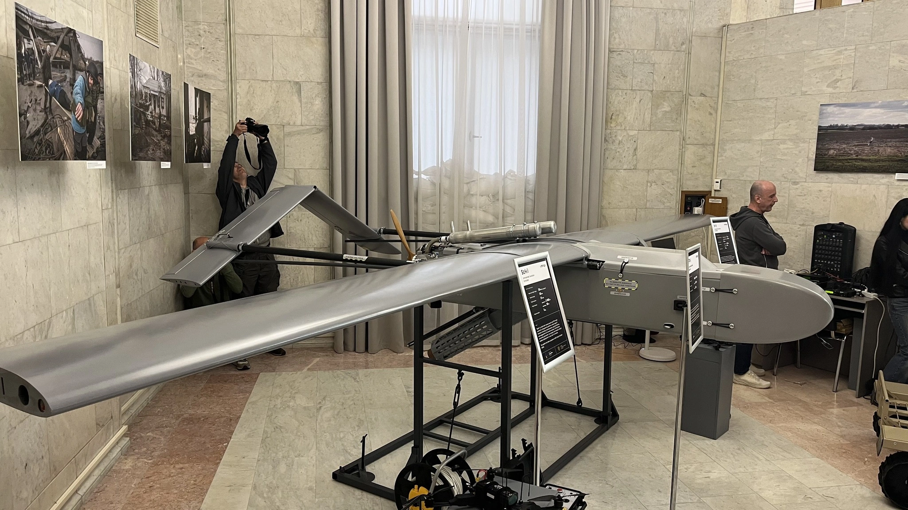
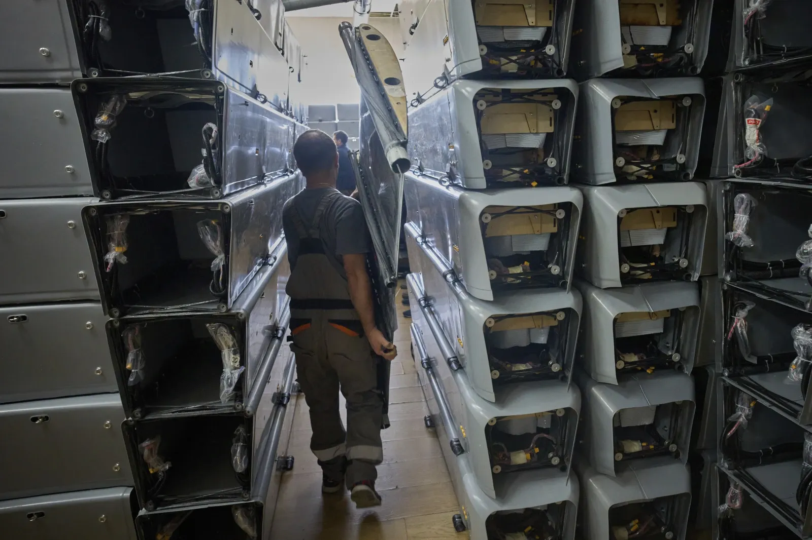

Підсумки пресконференції Fire Point
Під час військової виставки MSPO 2025 українська компанія Fire Point провела пресконференцію, де розповіла про досягнення компанії та подальші плани розвитку крилатих ракет «Фламінго» та анонсувала розробку балістичних ракет.
Компанія Fire Point була заснована людьми з технологічним бекґраундом, але без специфічного оборонного досвіду в 2022 році, після початку повномасштабного вторгнення. Це дало компанії свіжий погляд на сучасні існуючі технології, щоб їх переосмислити та втілити в розробки. Окрім того, засновники компанії усвідомлювали, що Україна має значно менше ресурсів, тому зосередилися на пошуку «асиметричних рішень».
Дрони FP-1 та FP-2
FP-1 призначений для глибоких ударів по ворожих цілях, тому переважно застосовується вночі. Завдяки серійному виробництву FP-1 та можливості виготовляти їх тисячами щомісяця, компанія створила низку допоміжних виробництв, які обслуговують головне виробництво. Завдяки цьому компанія виготовляє до 90 % кожного продукту в власних цехах.

Як зазначає технічний директор,
кожен проєкт проходить
декілька
фільтрів в процесі створення:
- Чи можливо це масово виробляти?
- виробничі потужності
- людські ресурси
- безпекові можливості
- матеріально-ресурсна база
- видобувна промисловість
- імпорт
- Чи буде це економічно доцільно?
- Співвідношення ціни завданої шкоди до ціни ураження
FP-5 «Фламінго»
FP-5 почався як ідея «на серветці» влітку 2024 року. Це була своєрідна компіляція між радянським «Стриж» та «дуже відомими західними аналогами». Корпус FP-5 виготовляється повністю автоматично на машині намотування вуглеволокна. Увесь цикл виготовлення фюзеляжу займає 6 годин. Використання композитних матеріалів знижує ефективну площу розсіювання (ЕПР), що напряму впливає на видимість на радарах. Окрім того, заявлено, що ракета здійснює політ на дуже малих висотах — «ніколи вище 50 метрів».
Вгору